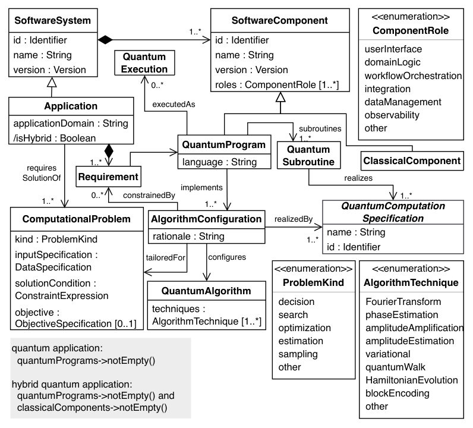
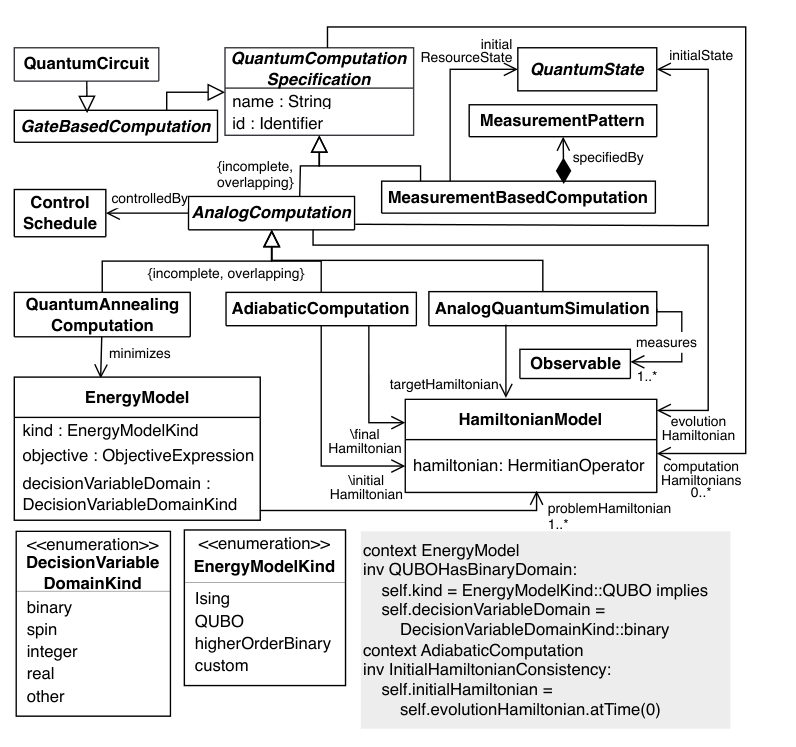
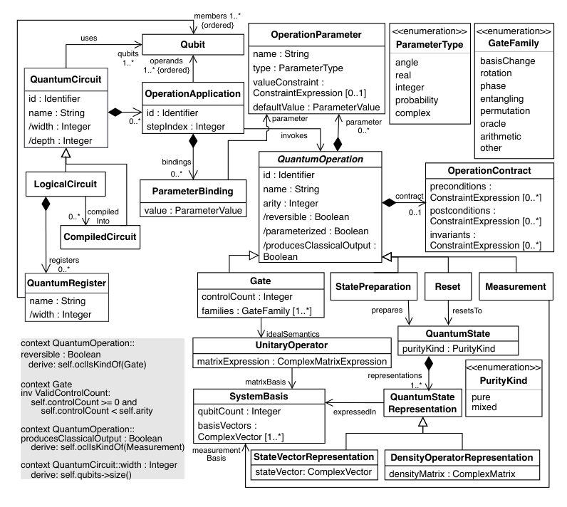
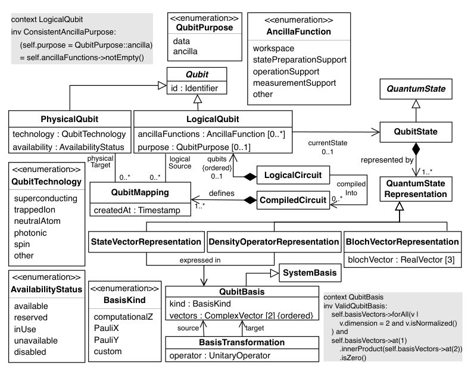

← Index · ← Previous · Next →
Authors: Jun Maeda, Toshiki Onagi, Soichiro Shimamori
Type: theory · Category: strongly correlated electrons · PDF: https://arxiv.org/pdf/2610.38663v1
Analysis basis: full PDF text, analyzed in chunks
Topic relevance: analog quantum simulation 2/5 · Keldysh / 2PI / non-Gaussian methods 1/5
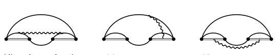
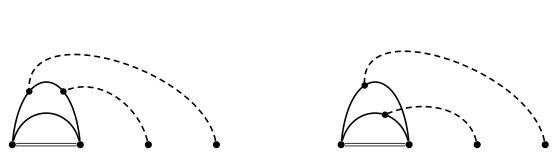
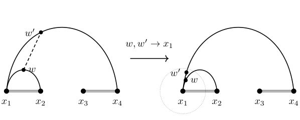
Summary. This paper applies the conformal bootstrap program to study charged Wilson lines in critical bosonic QED$_3$. By combining diagrammatic calculations with endpoint crossing, the authors derive key conformal data, such as dimensions and OPE coefficients, for these lines. The results confirm consistency between bulk and defect spectra, providing a detailed understanding of the theory's critical behavior in the large-N limit.
Why it may be interesting. While focused on gauge theory, the use of conformal bootstrap techniques and the study of critical points are fundamental tools applicable to strongly correlated electron systems, particularly those exhibiting quantum criticality.
Main problem. To systematically determine the conformal data (dimensions and OPE coefficients) of charged Wilson lines and their endpoints in a critical gauge theory.
Main result. The authors obtained closed-form expressions for four-endpoint correlators and demonstrated agreement between the bulk and Wilson-line spectra up to the first subleading order in 1/N.
Method. The study combines diagrammatic four-point calculations with the application of endpoint crossing equations, utilizing the large-N expansion.
Model / system. The physical system is critical bosonic QED$_3$ with $N$ complex scalar flavors, which is equivalent to the critical $ ext{CP}^{N-1}$ model. The analysis focuses on Wilson lines $W_q(C)$ and associated endpoint operators.
Key observables. Endpoint dimension, defect $g$-function, dimensions, and endpoint OPE coefficients of non-singlet Wilson-line primaries.
Important parameters / regimes. Large-$N$ limit with fixed charge $q$ ($q=O(N^0)$); calculations are performed up to first subleading order in $1/N$.
Assumptions / limitations. The analysis assumes the validity of the endpoint bootstrap program and is restricted to the first subleading order in $1/N$.
Figures summary. Not specified in the provided notes.
Paper structure. The paper proceeds by introducing the framework of Wilson lines and endpoint operators, calculating four-endpoint correlators using crossing relations, and finally addressing mixed correlators involving the bulk Hubbard-Stratonovich field.
We study the conformal Wilson line with general charge $q$ in critical bosonic QED$_3$ with $N$ complex scalar flavors by combining diagrammatic four-point calculations with endpoint crossing. We formulate the endpoint crossing equations with the full $\mathrm{SU}(N)$ flavor structure, keeping positivity manifest. For arbitrary positive integer charge $q$ held fixed at large $N$, we obtain closed-form expressions for four-endpoint correlators and mixed correlators involving two bulk Hubbard--Stratonovich fields through first subleading order in $1/N$. These results determine the endpoint dimension, the defect $g$-function, and the dimensions and endpoint OPE coefficients of the lowest non-singlet Wilson-line primaries. Moreover, combining the diagrammatic correlator with endpoint crossing, somewhat surprisingly, we find agreement between the bulk and Wilson-line spectra in every non-singlet flavor channel through order $1/N$. At degenerate levels, this agreement concerns the OPE-weighted averages of anomalous dimensions probed by the endpoint correlator. For unit charge, we independently reproduce these averages from the known bulk higher-spin spectrum.
Authors: Stefan Teufel
Type: theory · Category: other · PDF: https://arxiv.org/pdf/2610.40299v1
Analysis basis: full PDF text, analyzed in chunks
Topic relevance: analog quantum simulation 2/5 · Keldysh / 2PI / non-Gaussian methods 1/5
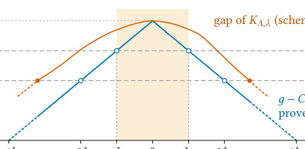
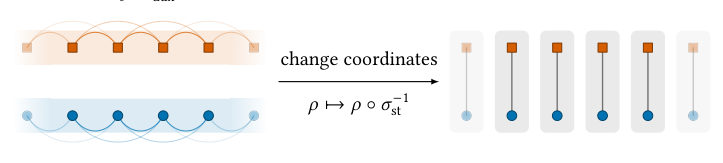
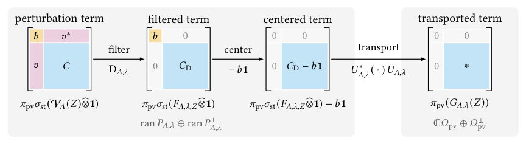
Summary. This theoretical work establishes that weak, long-range interactions do not destroy the bulk gap of a gapped free fermion system. It constructs a mathematical tool, the quasi-local spectral flow, which quantitatively maps the free ground state onto the ground state of the interacting system. This result is fundamental for understanding the robustness of topological order and gapped phases in interacting quantum matter.
Why it may be interesting. The rigorous mathematical framework for proving gap stability and characterizing ground state changes under weak, long-range perturbations is crucial for understanding topological phases and the robustness of quantum states in condensed matter systems.
Main problem. The paper aims to prove the stability of the bulk gap and construct a quasi-local spectral flow connecting the free ground state to the ground states of a system subjected to weak, long-range many-body interactions.
Main result. It proves that weak long-range interactions preserve the bulk gap of a free fermion system and that a quasi-local spectral flow transports the free ground state to the interacting ground states.
Method. The proof utilizes a spectral-flow strategy and relies on constructing pure ground states via quasi-local automorphisms, establishing gap stability through an excitation-number comparison.
Model / system. The system consists of fermionic Hamiltonians $\Phi_\lambda = \Phi_h + \lambda V$, where $\Phi_h$ is the free fermionic interaction (possibly with pairing terms) and $V$ is a weak, even self-adjoint many-body interaction. The analysis is performed in the infinite-volume limit.
Key observables. Bulk gap stability (showing the gap remains at least $g - C^*|\lambda|\|\mathcal{V}\|_*$), and the existence of a quasi-local spectral flow.
Important parameters / regimes. The strength of the interaction $\lambda$, the decay rate of the interactions (polynomial or stretched-exponential), and the initial bulk gap $g$ of the free system.
Assumptions / limitations. The free system must possess a bulk gap, and the interactions must decay sufficiently fast (e.g., polynomially with exponent $\xi > 2d$ for two-site interactions).
Paper structure. The paper builds upon prior work by establishing the necessary mathematical machinery (e.g., weighted Schur norms, polynomial propagation bounds) to prove the main theorems regarding gap stability and spectral flow for weakly perturbed gapped fermionic systems.
We prove that weak long-range many-body interactions preserve the bulk gap of a free fermion system and that a quasi-local spectral flow transports the free ground state to ground states of the interacting system. Let $Φ_h$ be a free fermionic interaction, possibly including pairing terms, whose infinite-volume Majorana coefficient operator $h$ has no spectrum in $(-g,g)$, and let $\mathcal V$ be an even self-adjoint many-body interaction. For sufficiently small $|λ|$, we construct pure ground states $ω_λ$ of the interacting bulk system $Φ_λ=Φ_h+λ\mathcal V$ and quasi-local automorphisms $β_{0,λ}$ such that $ω_λ=ω_0\circβ_{0,λ}$, where $ω_0$ is the free ground state of $Φ_h$. Each $ω_λ$ has a GNS Hamiltonian with gap at least $g-C_*|λ| \|\mathcal V\|_*$, where $\|\cdot\|_*$ is the relevant interaction norm. Our result allows polynomial decay of both the free coefficients and the many-body interaction. For two-site interactions on a uniformly discrete point set $Γ\subset\mathbb{R}^d$, a sufficient condition is decay as $(1+|x-y|)^{-\varpi}$ with $\varpi>2d$, for both the hopping and pairing coefficients and the interaction terms. The spectral-flow generator preserves the spatial exponent of the polynomial interaction norm, and its automorphisms satisfy locality bounds at that exponent. If $h$ and $\mathcal V$ have stretched-exponential decay, so does the spectral-flow generator. The proof constructs the spectral flow and establishes the gap through an excitation-number comparison, using polynomial propagation bounds for evolved interactions proved in a companion paper.
Authors: Ziqi Xu
Type: both · Category: numerical methods · PDF: https://arxiv.org/pdf/2610.39392v1
Analysis basis: full PDF text, analyzed in chunks
Topic relevance: methods for driven-dissipative 2/5 · analog quantum simulation 1/5
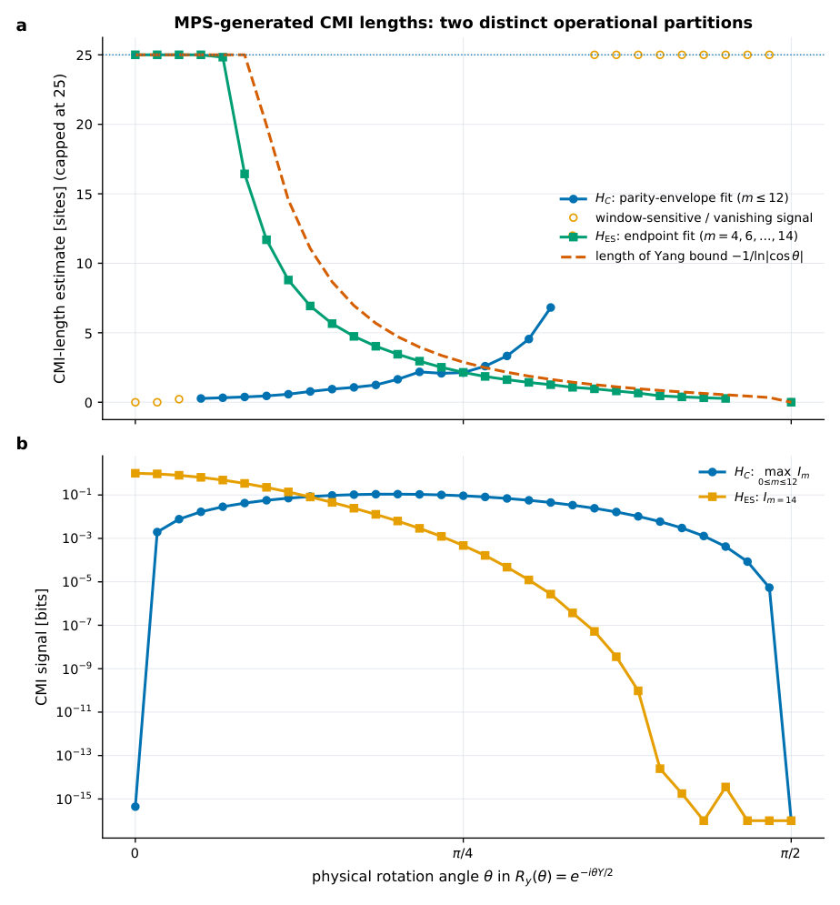
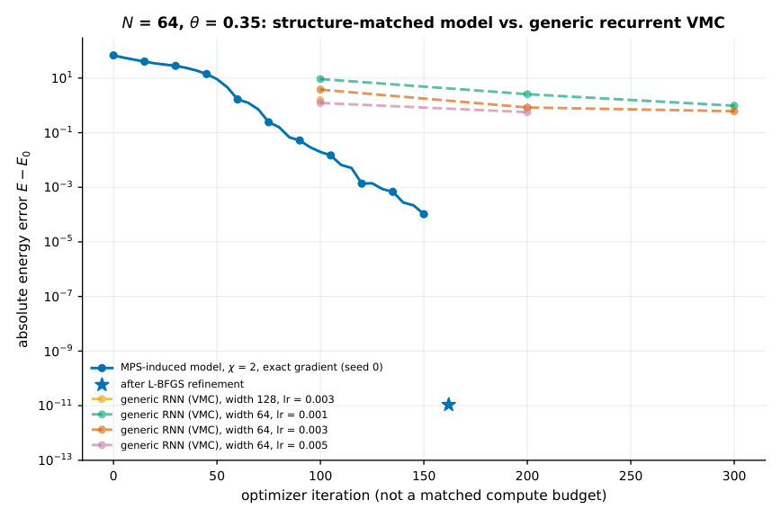
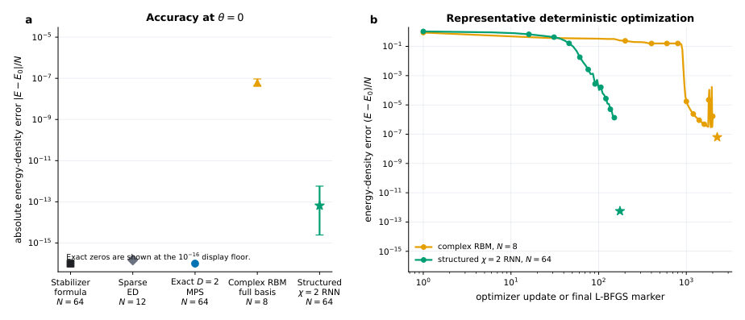
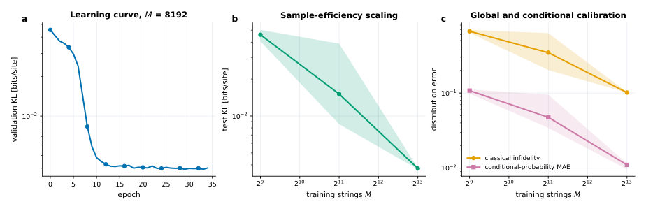
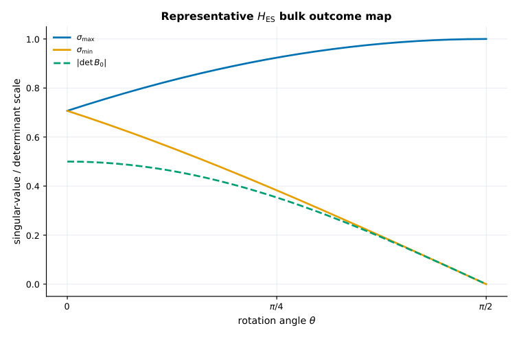
Summary. This paper explores the relationship between long-range quantum information flow, measured by Conditional Mutual Information (CMI), and the capacity of machine learning models to represent quantum states. Using rotated cluster states, the authors show that small virtual memory structures are sufficient to maintain long-range correlations, and that explicitly incorporating this structure into recurrent neural networks significantly improves the model's ability to accurately learn the underlying quantum physics.
Why it may be interesting. This work bridges quantum information theory (CMI) with modern computational techniques (ML), showing that structural knowledge (like the MPS bond structure) can provide a powerful inductive bias that makes complex quantum phenomena learnable by neural networks.
Main problem. The paper investigates how quantum information flow, quantified by Conditional Mutual Information (CMI), can persist over long distances even when the underlying quantum state has a very small internal memory.
Main result. It demonstrates that long-range CMI does not necessitate a large bond dimension, and that incorporating a small, structured virtual memory into machine learning architectures significantly aids optimization for learning quantum states.
Method. The authors use exact Matrix Product State (MPS) contractions to calculate CMI for rotated cluster states and compare these results against the performance of various neural network models (GRU, RBM) trained to represent the state's probability distribution.
Model / system. The primary system is the one-dimensional rotated cluster state, which is analyzed using its exact MPS representation with a fixed bond dimension of D=2. The study also compares this to the AKLT chain and uses general variational quantum circuit/neural network ansatzes.
Key observables. Conditional Mutual Information (CMI) decay length ($\xi_{CMI}$), two-point correlation length ($\xi_{2pt}$), and the energy/error minimization achieved by various neural network architectures.
Important parameters / regimes. Rotation angle $ heta$, bond dimension $D=2$, and the virtual memory capacity ($\chi$) used in the recurrent models.
Assumptions / limitations. The CMI decay analysis assumes an exponential decay form, and the ML comparisons rely on specific training protocols (e.g., using only computational-basis data for GRU).
Figures summary. The notes indicate comparisons of CMI decay curves for different measurement protocols (endpoint vs. bulk) and performance metrics (e.g., stabilization of stabilizer expectations) across various ML models.
Paper structure. The paper is structured around three main comparisons: 1) Comparing CMI decay ($\xi_{CMI}$) to correlation lengths ($\xi_{2pt}$); 2) Comparing CMI to other quantum information measures (like $I(A:C)$); and 3) Benchmarking the ability of different ML architectures (GRU, RBM, MPS-induced) to learn the state's distribution, with the MPS-induced model showing superior performance.
I study how measurement outcomes can remain conditionally dependent over long distances while the underlying state carries only a small internal memory, using one-dimensional rotated cluster states, whose exact matrix product state (MPS) bond dimension is $D=2$ at every rotation angle. Using exact MPS contraction, I compute the conditional mutual information (CMI) of two readout protocols: the entanglement-swapping endpoint CMI decreases from one bit at $θ=0$ to zero at $θ=π/2$, whereas a stationary bulk readout of the locally equivalent conventional cluster state vanishes at both limits. As an exact control, the spin-1 AKLT chain obeys $I_m=(4/9)\,3^{-m}$, so its CMI length equals its two-point correlation length, for an identifiable but non-generic reason. I then compare learners on the same $N=64$, $θ=0.35$ target. A positive autoregressive GRU learns the computational-basis Born distribution from a few thousand samples, but an exactly computable Bell-basis readout shows that this distribution does not fix the phases. A complex RBM reaches the $N=8$ ground state under an exact objective, while a short generic recurrent variational Monte Carlo pilot is still improving when its runs end. As a positive control, an MPS-induced recurrent model whose hidden state is the bond vector reaches the ground state to near machine precision at $χ=2$, whereas a $χ=1$ control fails. These results show that long CMI does not require a large bond dimension, and that building the small virtual memory into the architecture greatly eases optimization.
Authors: Siqing Yu
Type: theory · Category: strongly correlated electrons · PDF: https://arxiv.org/pdf/2610.40371v1
Analysis basis: full PDF text, analyzed in chunks
Topic relevance: analog quantum simulation 2/5 · Keldysh / 2PI / non-Gaussian methods 1/5
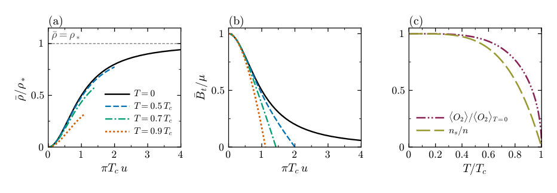
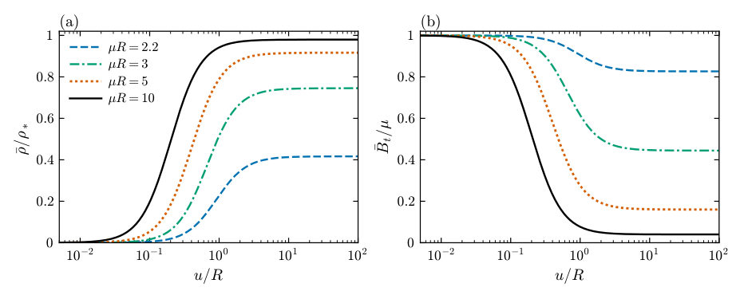
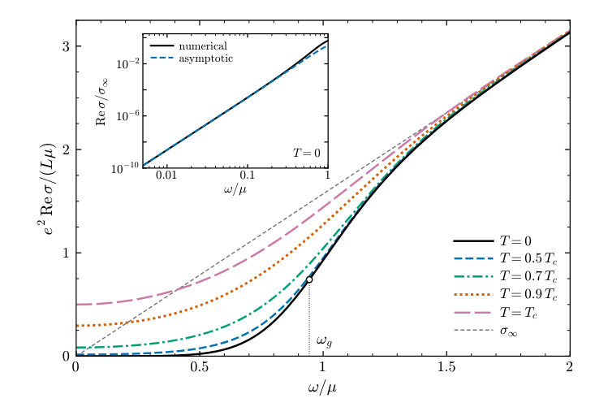
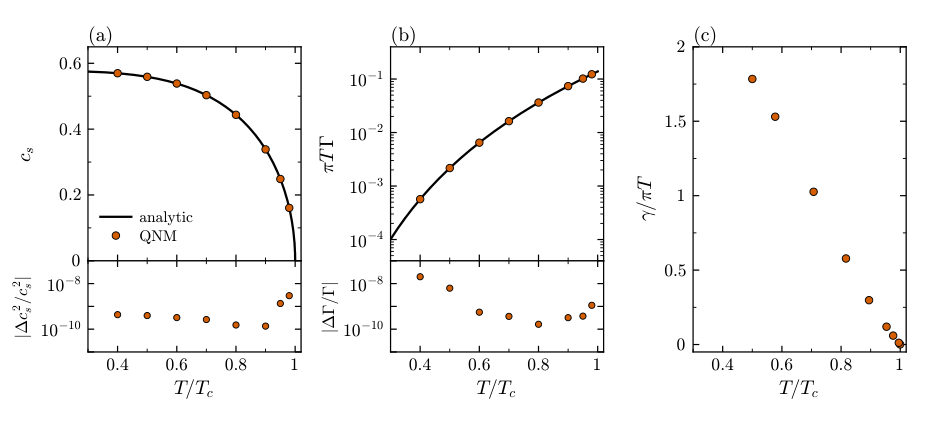
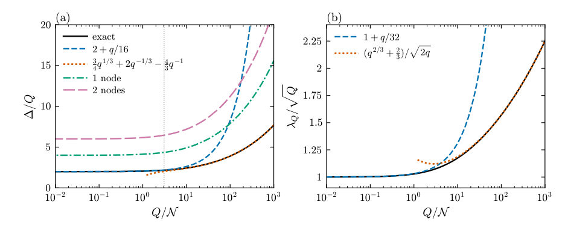
Summary. This paper provides an exact, closed-form holographic description of a strongly coupled superfluid using the Abelian Higgs model in AdS5 at the Bogomolny point. It calculates key properties across different physical regimes, including the superfluid fraction, large-charge scaling dimensions, and Rényi entropies. This work advances the understanding of strongly correlated quantum matter using the AdS/CFT correspondence.
Why it may be interesting. The holographic description of superfluidity and its connection to entanglement entropy provides powerful, non-perturbative tools to study strongly correlated quantum matter, analogous to phenomena in ultracold atomic gases or high-Tc superconductors.
Main problem. To find an exact, closed-form description of the condensed phase of a strongly coupled superfluid modeled by the Abelian Higgs model in AdS5, particularly at the Bogomolny point.
Main result. The superfluid exhibits exact adherence to the Gorter-Casimir two-fluid law on the planar black brane, and closed-form results are derived for the scaling dimension of large-charge states and charged Rényi entropies.
Method. The analysis uses holographic duality (AdS/CFT) by studying the Abelian Higgs model in the probe limit on various backgrounds (planar, global, hyperbolic slicings).
Model / system. The system is the Abelian Higgs model in AdS5, serving as a holographic model for a strongly coupled superfluid. The analysis focuses on the Bogomolny point where the scalar mass saturates the BF bound.
Key observables. Superfluid fraction ($n_s/n$), sound speed, attenuation, scaling dimension $\Delta(Q)$, and charged Rényi entropies.
Important parameters / regimes. Bogomolny coupling, temperature ($T$), charge ($Q$), and the probe limit ($\kappa_5/(eL) \ll 1$).
Assumptions / limitations. The analysis is restricted to the probe limit, and the closed-form results are derived specifically at the Bogomolny coupling point.
Figures summary. Not specified.
Paper structure. The paper is structured by analyzing the superfluid behavior on different geometric slicings: the planar black brane (thermal superfluid), global AdS5 (large charge), and hyperbolic slicing (Rényi entropies).
The Abelian Higgs model in AdS$_5$, in the probe limit, is a standard holographic model of a strongly coupled superfluid, usually solved numerically. When the scalar mass saturates the Breitenlohner-Freedman bound and the quartic coupling takes the Bogomolny value, its condensed phase can be found in closed form on every static, uncharged AdS$_5$ background with maximally symmetric spatial sections. We prove that it is linearly stable, as is any nodeless probe-limit condensate in the standard quantization with a nonnegative quartic coupling and no superflow. On each slicing it answers a different question about the dual conformal field theory. On the planar black brane it is the superfluid at all temperatures below $T_c$: the superfluid fraction follows the Gorter-Casimir two-fluid law exactly, and the speed and the attenuation of sound are found in closed form. In global AdS$_5$ it describes a state of charge $Q$ on $\mathbb{R}\times S^3$, arguably the lowest-energy one, and gives its scaling dimension in closed form at all $Q$, classically in the bulk. Its excitations include towers that the superfluid effective theory does not describe; they come from an infrared fixed point of the probe sector. The hyperbolic slicing gives in closed form a homogeneous hairy phase of the black holes that compute the charged Rényi entropies of a ball. Its condensate does not vanish at the entangling surface. When sourced by operators inserted there, the phase sets in at Rényi index exactly one at zero chemical potential, as found for a neutral scalar.
Authors: Madita Willsch, Gopal Chandra Santra, Dennis Willsch, Samuel Morales, Lukas Mauth, Vrinda Mehta, Fengping Jin, Kristel Michielsen
Type: both · Category: quantum information and computing · PDF: https://arxiv.org/pdf/2610.38803v1
Analysis basis: full PDF text, analyzed in chunks
Topic relevance: QC/QI experiment 2/5 · analog quantum simulation 1/5
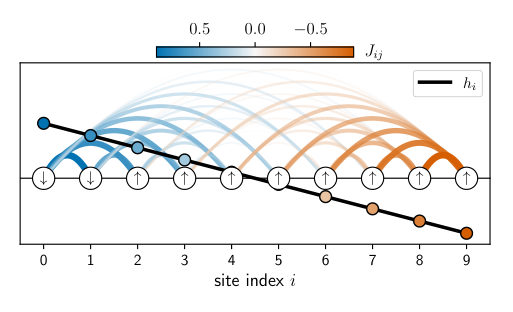
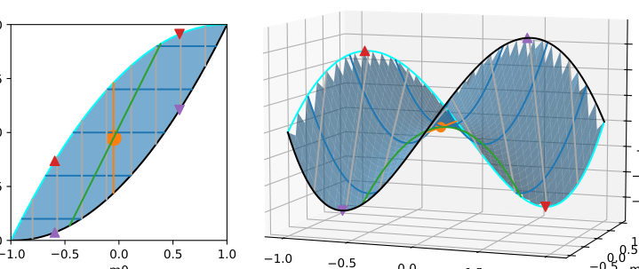
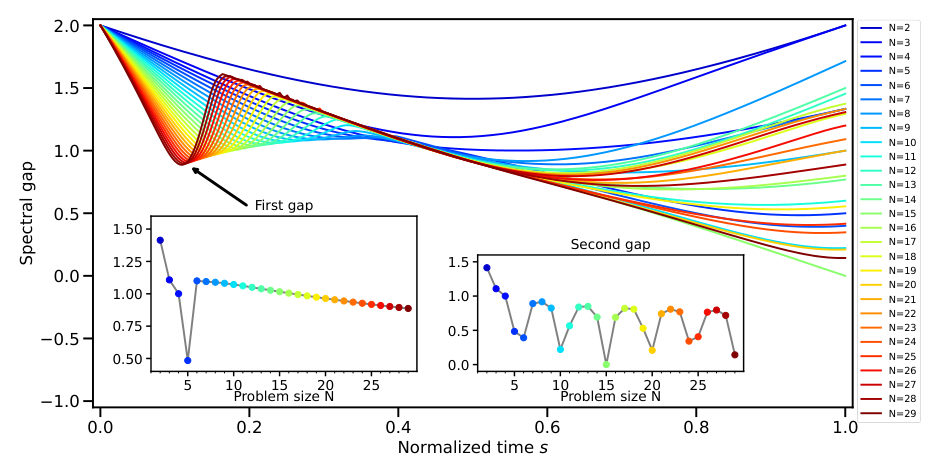
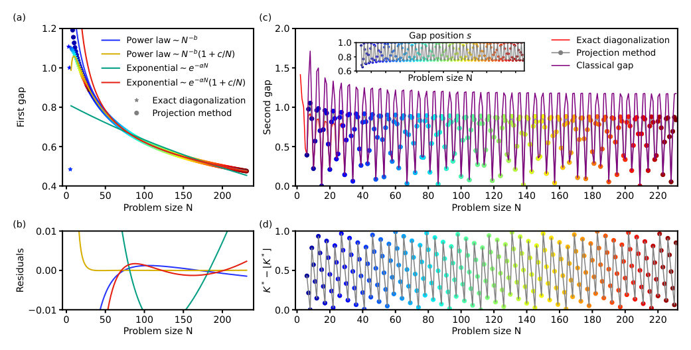
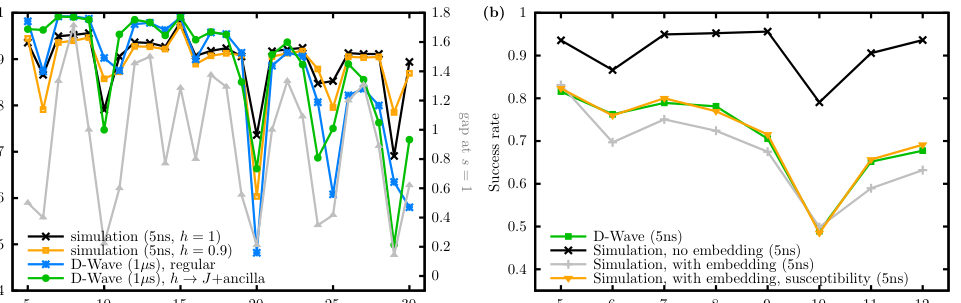
Summary. This paper introduces the Generalized Mean-Field Ising (GMFI) model, an exactly solvable Hamiltonian used as a benchmark for quantum and classical optimization. By analyzing its ground state and its behavior under quantum annealing, the authors demonstrate that the model provides a powerful, scalable testbed for understanding algorithmic limitations in quantum computing.
Why it may be interesting. The GMFI model serves as a perfect bridge, linking deep mathematical structures (number theory, exact solutions) to modern computational challenges (quantum annealing, optimization), making it highly relevant for testing quantum hardware capabilities.
Main problem. The paper aims to develop a benchmark family of models that combine analytical tractability with challenging optimization structure to test classical and quantum optimization algorithms.
Main result. The Generalized Mean-Field Ising (GMFI) model is shown to be exactly solvable, providing a scalable benchmark that exhibits unexpected system-size-dependent oscillatory signatures when tested with quantum annealing.
Method. The authors combine theoretical analysis (number theory, algebraic methods) with computational approaches, including quantum annealing simulations on a D-Wave processor and classical optimization algorithms like QAOA and simulated annealing.
Model / system. The system is the Generalized Mean-Field Ising (GMFI) model, described by a fully connected, inhomogeneous Ising Hamiltonian. This model is exactly solvable, revealing a hidden low-dimensional structure.
Key observables. Ground state energy, quantum annealing gap, magnetization ($M_0, M_1$), and the number of up spins ($K$).
Important parameters / regimes. System size ($N$), coupling constants ($h, J$), and the annealing time/schedule ($s$).
Assumptions / limitations. The analysis assumes the model can be mapped onto quantum hardware topologies (like Zephyr) and that the exact solvability provides a reliable benchmark despite algorithmic challenges.
Figures summary. Figure 1 shows the Hamiltonian structure for small N. Figure 13 displays the low-energy spectrum during quantum annealing, showing gap behavior vs. time for increasing N.
Paper structure. The paper progresses from establishing the exact solvability and ground state structure (Theorem 1) to deriving energy expressions in terms of macroscopic observables ($M_0, M_1$). It then investigates the model's behavior using various computational methods, culminating in detailed analysis of quantum annealing dynamics and number-theoretic classification of special cases.
Exactly solvable models provide opportunities to understand complex optimization problems while offering controlled benchmarks for computational methods. However, nontrivial models that combine analytical tractability with challenging optimization structure remain scarce. Here, we introduce the Generalized Mean-Field Ising (GMFI) family, a densely connected and inhomogeneous class of Ising Hamiltonians whose ground states can nevertheless be obtained exactly. This exact solution reveals a hidden low-dimensional structure and enables a complete number-theoretic classification of different system sizes and degenerate ground states. Uniquely, the GMFI family can be used to benchmark both quantum and classical optimization methods over system sizes far beyond exact diagonalization. We investigate the GMFI family using several approaches, including theoretical analysis of quantum annealing, experiments on a D-Wave quantum processor, the quantum approximate optimization algorithm (QAOA), imaginary-time evolution (ITE), greedy algorithm, simulated annealing, and a quantum-inspired greedy algorithm. Despite the GMFI model's exact solvability, it exhibits nontrivial algorithmic behavior: although the quantum-annealing gap is expected to decrease with increasing system size, it shows pronounced and unexpected system-size-dependent oscillatory signatures. These results establish GMFI models as a rare bridge between exact many-body theory, number theory, optimization, and quantum hardware, providing a scalable benchmark for identifying and understanding algorithmic limitations in classical and quantum computing.
Authors: Luca Maria Del Bono, Flavio Nicoletti, Federico Ricci-Tersenghi
Type: theory · Category: disordered systems and neural networks · PDF: https://arxiv.org/pdf/2610.38724v1
Analysis basis: full PDF text, analyzed in chunks
Topic relevance: Keldysh / 2PI / non-Gaussian methods 2/5 · analog quantum simulation 1/5
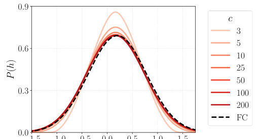
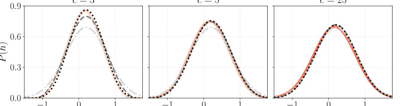
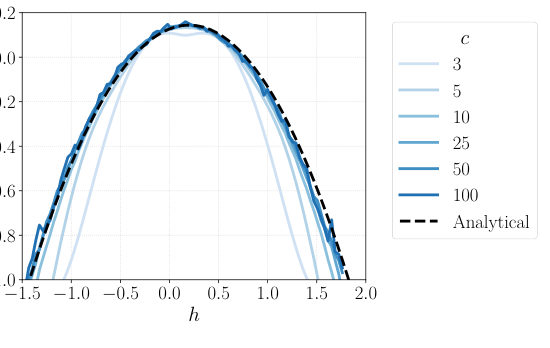
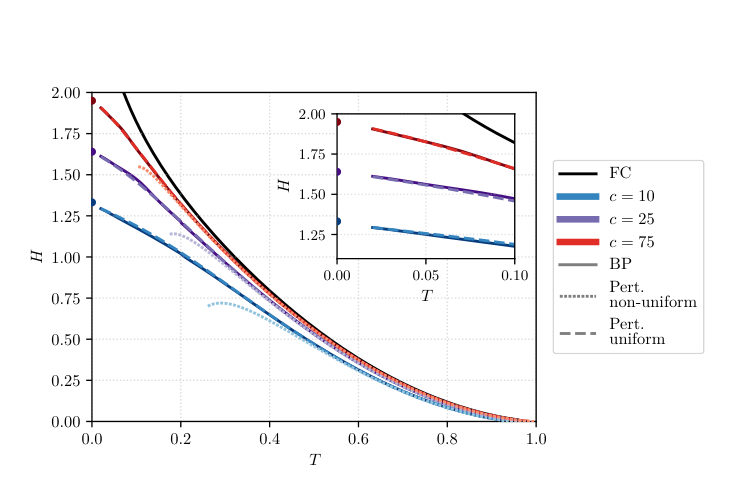
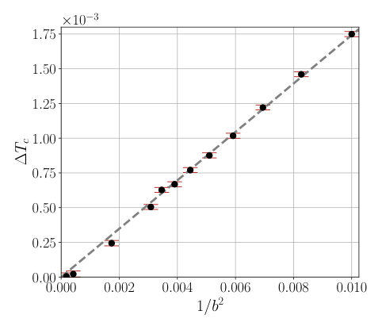
Summary. This work develops a high-connectivity analytical expansion for Ising spin glasses on random graphs to study their critical behavior. By expanding cavity equations around the mean-field limit, the authors derive closed-form equations for the de Almeida-Thouless line. The uniform expansion proves particularly useful, offering accurate descriptions of the system's critical properties across a wide range of temperatures.
Why it may be interesting. While focused on classical statistical mechanics, the techniques developed—analytical expansions around mean-field limits and the study of phase transitions in disordered systems—are foundational to understanding complex quantum many-body systems, particularly those exhibiting glassy dynamics.
Main problem. The paper aims to compute a high-connectivity analytical expansion for Ising spin glasses defined on sparse random graphs, focusing specifically on determining the critical behavior of the system.
Main result. The authors derive closed analytical equations for the de Almeida-Thouless (dAT) line in the $T$-$H$ plane, providing a computational advantage over purely numerical methods for mean-field finitely-connected systems.
Method. The primary method involves expanding the cavity equations around the fully-connected mean-field limit, utilizing two distinct approaches: a non-uniform expansion and a uniform expansion.
Model / system. The system is the Ising spin glass defined on a Random Regular Graph with connectivity $c$. The Hamiltonian involves random couplings $J_{ij}$ (Rademacher variables) and external fields $a_i$.
Key observables. The de Almeida-Thouless (dAT) line in the temperature ($T$)–magnetic field ($H$) plane, and the critical behavior at $T=0$.
Important parameters / regimes. Connectivity $c$, temperature $T$, magnetic field $H$, and the branching ratio $b=c-1$.
Assumptions / limitations. The analysis relies on the high-connectivity limit ($c o \infty$) for the analytical expansion, and the uniform expansion is necessary to maintain accuracy across all temperatures.
Figures summary. Figure 1 compares numerically computed probability distributions $P(h)$ with the fully connected prediction, demonstrating convergence as connectivity $c$ increases.
Paper structure. The paper establishes the physical model and the cavity method framework, develops the high-$c$ expansion using two types of approximations (non-uniform and uniform), derives the analytical equations for the dAT line, and validates the results by extending the analysis to the $T=0$ limit.
We compute a high-connectivity analytical expansion for Ising spin glasses on sparse random graphs. We expand the cavity equations around the fully-connected mean-field limit, focusing on the critical behavior of the system: our approach allows us to compute the de Almeida-Thouless line of mean-field finitely-connected systems in the temperature $T$--magnetic field $H$ plane, by means of closed analytical equations. The exact cavity solution of such systems can only be obtained by solving numerically iterative equations, so our approach brings a notable computational advantage. On the theoretical side, we are able to identify three sources of corrections to the fully-connected mean-field solution: i) the non-Gaussianity of the cavity fields, ii) the statistical correlation between the cavity fields and their fluctuations, and iii) the corrections to the cavity filter functions. These corrections are treated using two different expansions: a non-uniform expansion, where we expand all three contributions around the mean-field solution, and a uniform expansion, where we only expand the statistics but leave the cavity filters untouched. The former allows for a direct comparison with the Sherrington-Kirkpatrick model but fails at low temperatures, as a consequence of the de Almeida-Thouless line diverging in the zero-temperature limit. On the other hand, the uniform expansion describes with good accuracy the critical behavior of the system. We also extend these results to the $T = 0$ limit.
Authors: Tao Yue, Yuechen Li, Man Zhang
Type: theory · Category: other · PDF: https://arxiv.org/pdf/2610.39406v1
Analysis basis: full PDF text, analyzed in chunks
Topic relevance: analog quantum simulation 2/5 · quantum measurements 1/5




Summary. This paper introduces QSoftCore, a conceptual framework designed to standardize Quantum Software Engineering (QSE) by unifying disparate quantum computing concepts. It maps the entire development lifecycle, from initial application requirements down to hardware execution evidence. This provides a crucial shared vocabulary necessary for building robust, multi-paradigm quantum software tools.
Why it may be interesting. While highly software-focused, the detailed breakdown of computation paradigms (gate-based vs. Hamiltonian/analog) provides a structured taxonomy that could inform the software modeling of complex open quantum systems or time-dependent Hamiltonians.
Main problem. Quantum Software Engineering (QSE) lacks a consistent conceptual foundation to reference concepts across physical, mathematical, and paradigm-specific levels of abstraction.
Main result. The paper proposes QSoftCore, a conceptual model that reorganizes QC concepts from a software engineering perspective, providing shared referents across the entire QSE lifecycle.
Method. The authors developed a comprehensive conceptual model (QSoftCore) by analyzing the requirements of the QSE field and mapping existing QC concepts into software engineering artifacts.
Model / system. QSoftCore models the flow from Application Needs $\rightarrow$ Computational Problem $\rightarrow$ Algorithm Configuration $\rightarrow$ Quantum Program $\rightarrow$ Quantum Execution. It explicitly details specifications for various paradigms, including gate-based circuits and Hamiltonian models for analog computation.
Key observables. Computational Problem Kind (e.g., decision, optimization), execution results, and measurement evidence.
Important parameters / regimes. Backend constraints, noise levels, and computational resource budgets are critical constraints considered by the model.
Assumptions / limitations. The model is intentionally designed to be incomplete to allow for future evolution alongside advancements in quantum computing technologies and QSE practices.
Figures summary. Figure 1 illustrates the overall application and software-system view, connecting requirements to execution. Figure 2 details the quantum-computation paradigm view, showing specifications like circuits and Hamiltonian models.
Paper structure. The paper introduces the problem of conceptual inconsistency in QSE, presents the QSoftCore model detailing its components (Application View, Computation Specifications), assesses it against existing literature, and concludes by outlining its utility for standardizing the QSE lifecycle.
Quantum software engineering (QSE) requires understanding application requirements, quantum programs and algorithms, quantum computation paradigms, executions, and deployment. However, relevant quantum computing (QC) concepts are often defined across physical, mathematical, and paradigm-specific levels of abstraction, making it difficult for the QSE community and hence proposed methods to refer to them consistently. To this end, we present QSoftCore, a conceptual model that reorganizes established QC concepts from a software engineering perspective and connects quantum applications, computational problems, algorithms, configurations, programs, and paradigm-specific computation specifications with state evolution, execution results, and backends. Our assessment against QSE literature across key software engineering activities indicates that QSoftCore provides shared QC referents for quantum computations, executions, deployment configurations, backends, and measurement evidence across the QSE lifecycle.
Authors: Jonas Wunder, Hendrik Weimer, Ricardo Costa de Almeida
Type: theory · Category: quantum information and computing · PDF: https://arxiv.org/pdf/2610.40642v1
Analysis basis: full PDF text, analyzed in chunks
Topic relevance: QC/QI experiment 2/5
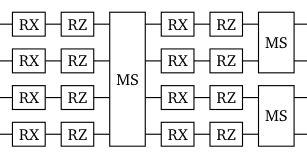
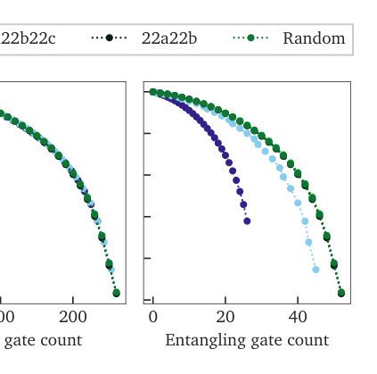
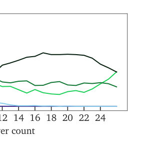
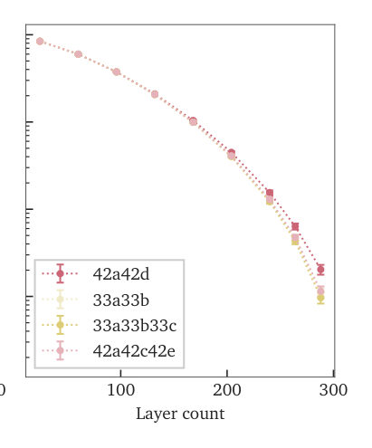
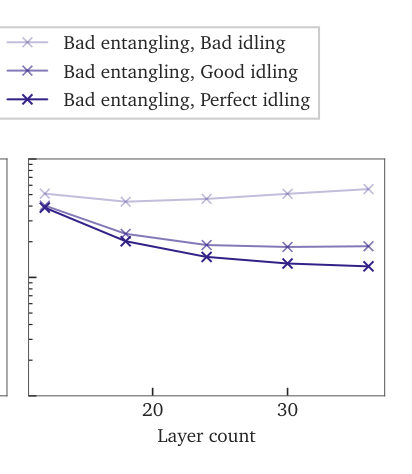
Summary. This work analyzes which entangling gate set is best suited for quantum computation on trapped-ion platforms by benchmarking unitary synthesis. By varying the complexity of the gate set and modeling hardware error scaling, the authors determine that the optimal strategy is highly dependent on the underlying physical error model. This provides crucial guidance for hardware engineers designing scalable quantum processors.
Why it may be interesting. It provides quantitative, hardware-aware guidelines for quantum algorithm design, directly informing which physical gate set (e.g., all-to-all vs. nearest-neighbor) is most resource-efficient for a given error model.
Main problem. The paper investigates the trade-off between increasing the engineering complexity of a gate set (e.g., using more complex multiqubit gates) and the actual performance gain when synthesizing arbitrary quantum unitaries.
Main result. The optimal entangling strategy depends critically on the assumed scaling of hardware gate errors: full-register gates are superior under linear error scaling, while two-qubit gates can dominate under quadratic error scaling.
Method. The authors developed a versatile toolset using variational quantum circuits (ansatz) to benchmark unitary synthesis against Haar-random target unitaries.
Model / system. The study focuses on trapped-ion quantum computers, utilizing native Mølmer–Sørensen (MS) multiqubit gates alongside single-qubit rotations to construct the quantum circuit ansatz.
Key observables. Gate fidelity ($F$), infidelity ($1-F$), total circuit depth, and the number of entangling gates used.
Important parameters / regimes. The scaling exponent of gate infidelity (linear $N_g$ vs. quadratic $N_g^2$) and the number of qubits ($N=4, 6$).
Assumptions / limitations. The analysis assumes that gates within a single entangling layer can run in parallel, and the comparison is benchmarked against synthesizing Haar-random unitaries.
Figures summary. Figures illustrate the structure of the variational ansatz for different entangling strategies (e.g., 4a vs. 22a22b22c). Performance plots show fidelity vs. circuit depth, demonstrating how the optimal strategy changes based on the assumed error scaling.
Paper structure. The paper introduces the problem of gate set comparison, develops the general variational ansatz, benchmarks performance using unitary synthesis, and finally analyzes the results by comparing strategies under different error scaling models.
Trapped-ion quantum computers are promising as a platform for realizing quantum computational advantage. They promise long coherence times, near all-to-all connectivity, and potential multiqubit gates as distinguishing advantages compared to competing platforms. Regarding these advantages, it is crucial to understand the trade-offs between increasing engineering complexity and actual improvements in running quantum algorithms with a more flexible gate set. In this work, we investigate this question and develop a versatile toolset to evaluate the performance of gate sets composed of native Mølmer--Sørensen multiqubit gates. To this end, we employ unitary synthesis as an application-agnostic benchmark target and identify specific hardware requirements for multiqubit gates to be advantageous.
Authors: Hugo D. Nogueira, Siwar Badreddine, Olivier Adjoua, Diata Traore, Guillaume Michel, Jean-Philip Piquemal
Type: theory · Category: strongly correlated electrons · PDF: https://arxiv.org/pdf/2610.40561v1
Analysis basis: full PDF text, analyzed in chunks
Topic relevance: quantum measurements 2/5
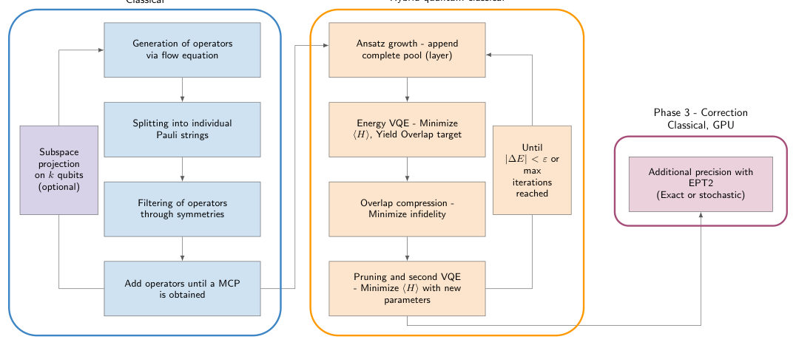
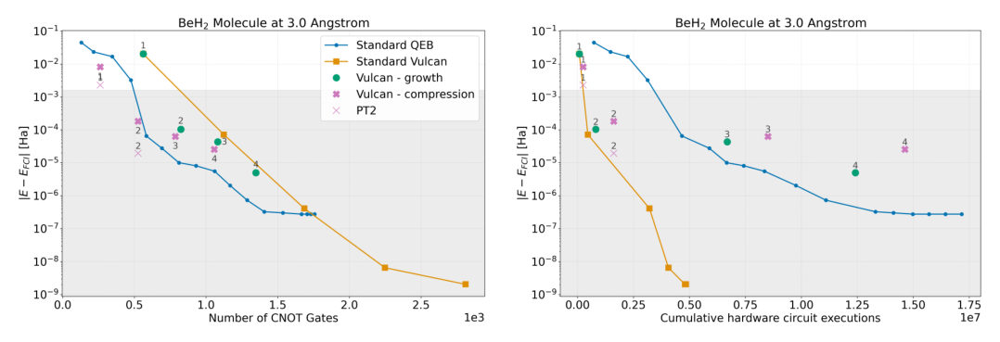
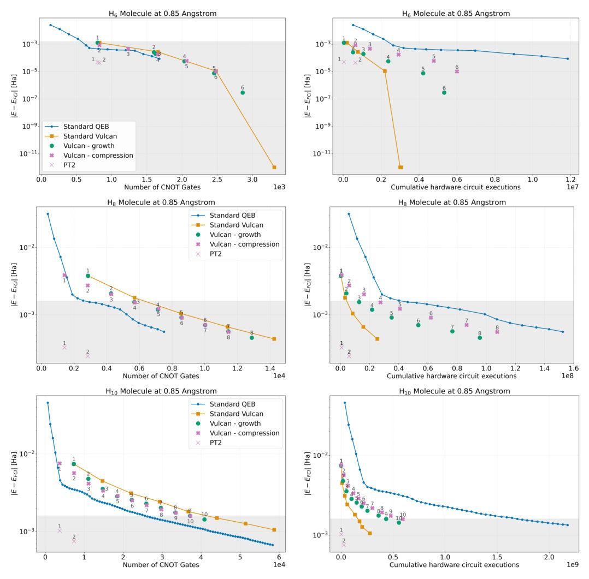
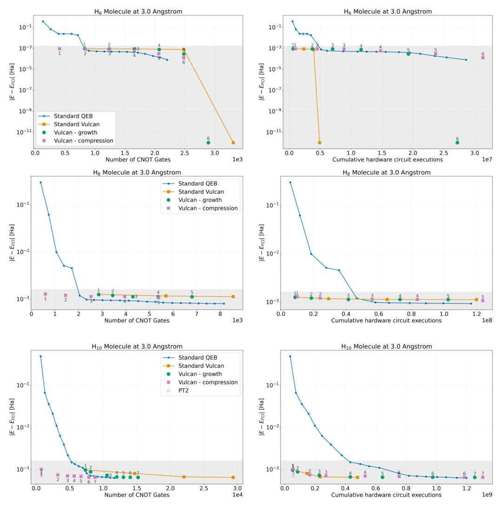
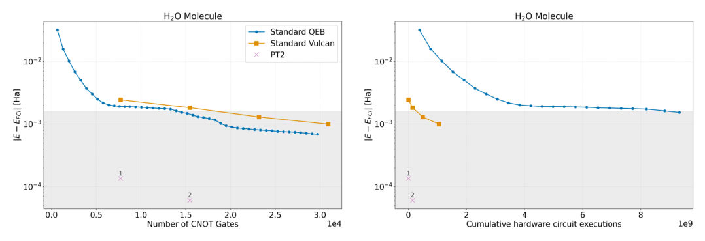
Summary. This paper introduces VULCAN, a novel hybrid quantum-classical algorithm designed to overcome the scalability limits of VQE variants for quantum chemistry. It dynamically builds quantum circuits by growing and compressing operator layers, thereby eliminating costly gradient measurements. This approach achieves chemical accuracy for molecular systems with significantly reduced measurement overhead compared to state-of-the-art adaptive methods.
Why it may be interesting. The focus on developing resource-efficient quantum algorithms for molecular Hamiltonians directly addresses the core challenge of simulating strongly correlated electron systems on near-term quantum hardware.
Main problem. Accurately calculating the ground state energies for strongly correlated many-body systems, which is computationally intractable for classical methods due to Hilbert space size.
Main result. The proposed VULCAN framework achieves chemical accuracy for molecular systems with significantly lower measurement cost (5-20% of ADAPT-VQE) and successfully solves cases where standard adaptive methods fail.
Method. A hybrid quantum-classical approach called VULCAN, which uses Variational Double Bracket Flow (VDBF) to generate operators, employs a grow-then-compress scheme to manage circuit depth, and finishes with a stochastic Epstein-Nesbet perturbative correction.
Model / system. Electronic structure calculations for molecular systems, including hydrogen chains, BeH2, and H2O. The underlying model involves mapping the molecular Hamiltonian onto a qubit representation.
Key observables. Ground state energy, measurement cost (Pauli-term evaluations), CNOT gate count (circuit depth), and the error ($\sigma$) in the ENPT2 correction.
Important parameters / regimes. Chemical accuracy ($\sim 1$ kcal/mol), qubit count (up to 32 logical qubits), and the relative scaling of measurement cost compared to ADAPT-VQE.
Assumptions / limitations. The method assumes that the problem can be effectively decomposed into layers that can be added sequentially and compressed, and that classical post-processing (ENPT2) can provide necessary accuracy boosts.
Figures summary. Figure 1 illustrates the three primary phases of the VULCAN pipeline: Pool generation, the grow-then-compress loop, and the final perturbative correction.
Paper structure. The paper details the VULCAN framework in three phases: 1) Generating a minimal complete pool using VDBF equations; 2) Iteratively building the ansatz via a grow-then-compress loop; and 3) Applying a stochastic ENPT2 correction for final energy refinement.
While Variational Quantum Eigensolver (VQE) variants are among leading candidates for electronic structure calculations on quantum computers, gradient-based operator selection limits their scalability. To solve this, we introduce the Hamiltonian-gradient-free VULCAN (Variational Upbuilding, Layered Compression, Adaptive N-body perturbation) layered VQE framework. Our method dynamically generates ansatz operators using Variational Double Bracket Flow (VDBF) equations. Combined with a linearly scaling minimal complete pool, it creates a pool 4-12 times smaller than QEB (Qubit-Excitation-Based) pools. By appending entire layers simultaneously, Hamiltonian gradient measurements are completely eliminated. Circuit depth is managed via a grow-then-compress scheme using efficient state-overlap measurements, and qubit requirements are reduced by projecting the Hamiltonian onto a dominant-determinant subspace. Using high-performance emulation up to 32 logical qubits, we achieve chemical accuracy at just 5-20% of the measurement cost of batched ADAPT-VQE for hydrogen chains, BeH2 and H2O. For the 32-qubit C3H6, where batched ADAPT-VQE does not reach chemical accuracy, a single VULCAN layer combined with a GPU-accelerated stochastic Epstein-Nesbet (ENPT2) correction does. This stochastic ENPT2 post-processing step enables early termination at chemical accuracy.
Authors: Lorenzo Ciardo, Antoine Mottet
Type: theory · Category: other · PDF: https://arxiv.org/pdf/2610.40571v1
Analysis basis: full PDF text, analyzed in chunks
Topic relevance: quantum measurements 2/5
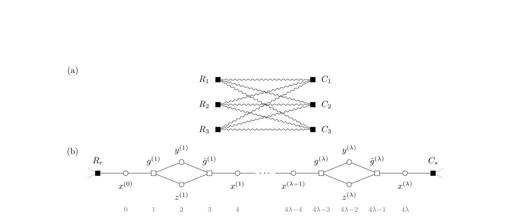
Summary. This paper establishes a significant improvement on the quantum chromatic gap by proving that $\chi_q$ can be fixed (e.g., to 3) while the classical chromatic number $\chi$ can be arbitrarily large. The proof is highly technical, relying on connecting quantum pseudo-telepathy in complex label-cover games to graph coloring via multiple advanced mathematical reductions.
Why it may be interesting. While the focus is on graph theory and quantum information, the techniques—especially the use of complex reductions and the quantification of quantum advantage in local games—are highly relevant to understanding the limits of quantum correlations in physical systems.
Main problem. The paper investigates the quantum chromatic gap, which measures the difference between the classical chromatic number ($\chi$) and the quantum chromatic number ($\chi_q$) of a graph.
Main result. The authors prove that the quantum chromatic gap is unbounded, demonstrating the existence of graphs where $\chi_q = 3$ but $\chi$ can be arbitrarily large.
Method. The proof proceeds by establishing a strong form of pseudo-telepathy for $d$-to-$1$ games, using a chain of complex reductions starting from a modified Mermin–Peres magic square.
Model / system. The core model involves quantum assignments for nonlocal games (specifically $d$-to-$1$ label-cover games) and their connection to graph coloring problems. The analysis relies on shared finite-dimensional entanglement.
Key observables. Quantum chromatic number ($\chi_q$), classical chromatic number ($\chi$), and the context radius ($k$) of quantum measurements.
Important parameters / regimes. The game parameter $d \geq 4$, the required precision $\epsilon > 0$, and the context radius $k \in \mathbb{N}$.
Assumptions / limitations. The proof relies on confirming a strong conjecture regarding perfect quantum strategies for $d$-to-$1$ games and the successful application of multiple complex reductions (PCP, hypergraph coloring, etc.).
Paper structure. The structure follows a sequence of mathematical constructions: starting with a 'stretched' Mermin–Peres magic square to increase context radius, applying parallel repetition to reduce classical value, transforming the system via PCP construction to a hypergraph, and finally reducing hypergraph coloring to $d$-to-$1$ games.
We confirm a conjecture of the first author [SODA'26] on a strong form of pseudo-telepathy for Khot's $d$-to-$1$ games: for every $d\geq 4$, every $ε>0$, and every $k\in\mathbb N$, there is a $d$-to-$1$ label-cover game of classical value less than $ε$ that admits a perfect quantum strategy using finite-dimensional shared entanglement with measurement contexts of radius at least $k$. As a consequence, there exist graphs whose quantum chromatic number $χ_q$ is $3$ and whose classical chromatic number $χ$ is arbitrarily large. This is the first improvement on the quantum chromatic gap since the work of Brassard, Cleve, and Tapp [Phys. Rev. Lett.'99], which produced graphs for which $χ$ grows exponentially in $χ_q$. To prove the conjecture, we proceed as follows. We start with a ``stretched'' version of the Mermin--Peres magic square, obtained by spacing out its equations and linking them with additional long equation wires. This operation increases the radius of the initial measurement contexts of a perfect quantum strategy for the game, while preserving classical unsatisfiability. We then apply parallel repetition to make the classical value small, and we turn the system into a pseudo-telepathic multi-layered Kneser hypergraph via a PCP construction of Dinur, Guruswami, Khot, and Regev [STOC'03]. Finally, we feed the resulting hypergraph into the reduction of Fei, Minzer, and Wang from hypergraph colouring to $4$-to-$1$ games, we establish quantum completeness of this reduction, and we show that it preserves context radius.
Authors: Abhishek, P. Arumugam
Type: theory · Category: quantum information and computing · PDF: https://arxiv.org/pdf/2610.40320v1
Analysis basis: full PDF text, analyzed in chunks
Topic relevance: analog quantum simulation 2/5
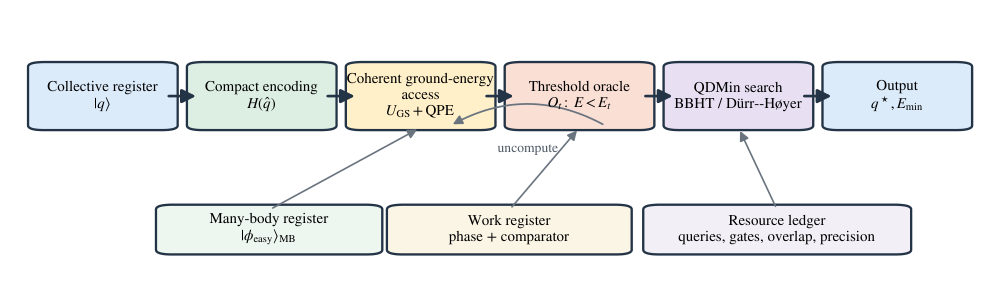
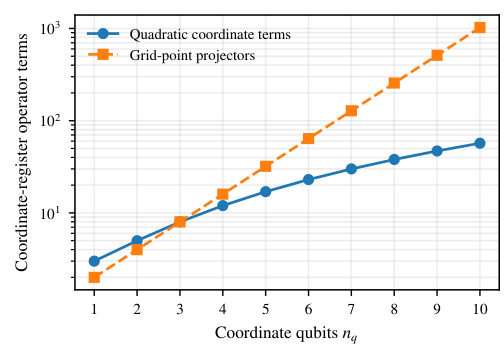
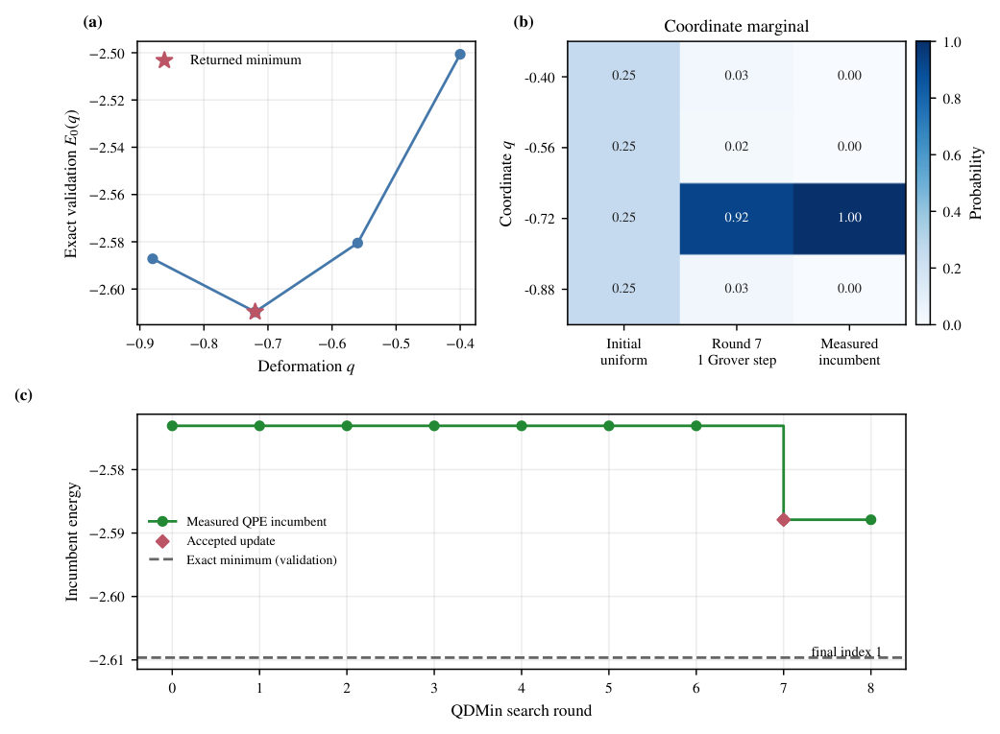
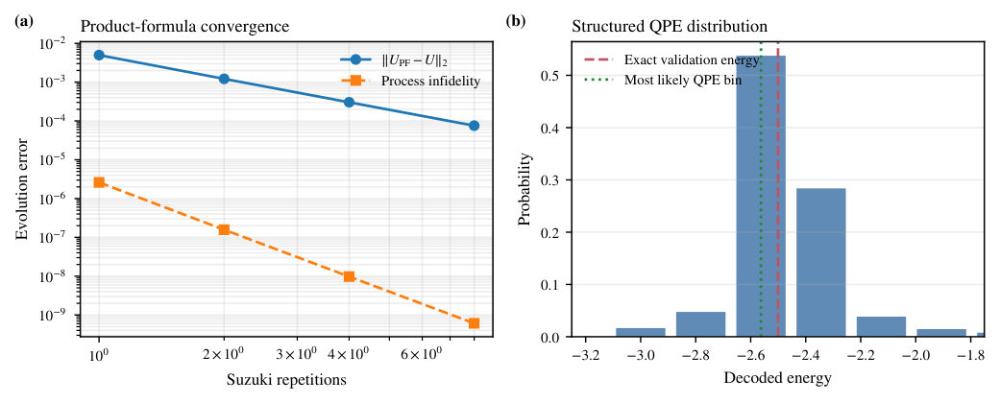
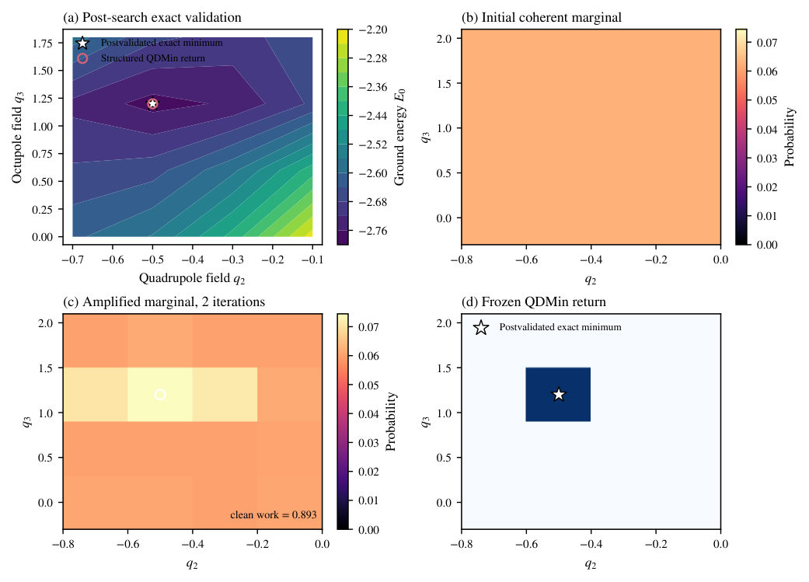
Summary. This paper proposes QDMin, a quantum algorithm designed to find the minimum energy of complex nuclear shape landscapes by treating the coordinate dependence coherently. It leverages amplitude amplification to search the parameter space efficiently, showing promising scaling advantages over classical methods. The main limitation identified is the current fidelity of accessing the true ground state within the quantum circuit.
Why it may be interesting. The methodology of using coherent registers to encode continuous parameters (like nuclear deformation coordinates) and applying quantum search algorithms to find the minimum energy state is highly relevant to quantum simulation of many-body systems.
Main problem. The core problem is efficiently locating the minimum energy of a complex, coordinate-dependent nuclear collective Hamiltonian, $\min_{q} E_0(q)$.
Main result. The QDMin algorithm demonstrates a significant potential quantum speedup, showing that one Grover round can raise the probability of finding the true minimum from 0.25 to 0.921 in a 1D case.
Method. It employs a coherent quantum search strategy using a collective-coordinate register and an on-demand ground-energy threshold oracle, avoiding explicit point-by-point energy landscape construction.
Model / system. The model is a schematic pairing-plus-multipole Hamiltonian used to simulate nuclear shape coexistence, parameterized by collective coordinates $q$. The Hamiltonian is encoded coherently using an operator expansion $\hat{q}$ rather than explicit projectors.
Key observables. The minimum ground-state energy ($E_{\min}$), the success probability of finding the minimum, and the required quantum circuit resources.
Important parameters / regimes. The scaling is expected to be $O(\sqrt{N_q})$ in the unstructured model; the fidelity of ground-state access (e.g., 0.744) is a critical parameter.
Assumptions / limitations. The primary bottleneck identified is the fidelity of coherent ground-state access, which falls below the target. The total advantage is conditional on the cost of the many-body oracle.
Figures summary. Figure 1 illustrates the QDMin architecture, showing the coherent path and oracle usage. Figure 2 compares the resource cost of the coherent operator representation versus explicit grid-point projectors.
Paper structure. The paper introduces the problem, details the QDMin coherent encoding and its resource advantages over classical/direct quantum methods, presents results on 1D and 2D calculations, and concludes by analyzing the overall quantum advantage.
Locating the minimum of a nuclear collective landscape can require many interacting many-body calculations. QDMin (Quantum Deformation Minimum Finding) searches a parameterized Hamiltonian family with a coherent collective-coordinate register and an on-demand ground-energy threshold oracle. The oracle supplies the predicate required for quantum minimum-finding without first constructing the energy landscape point by point. We implement it for a schematic pairing-plus-multipole model using circuit-generated energy estimates during the search. In a four-point calculation, one Grover round raises the probability of the true minimum from 0.25 to 0.921. A $4\times4$ quadrupole--octupole-field calculation extends the complete circuit to two coordinates, although its minimum is first sampled in a round with zero Grover iterations. Its worst-case branch-preparation fidelity of 0.744 falls below the declared target, identifying coherent ground-state access as the current bottleneck. QDMin inherits expected $O(\sqrt{N_q})$ candidate-query scaling in the unstructured model; total advantage depends on the many-body oracle cost and remains unestablished.
Authors: Nick G. Jones, Paul Fendley, Nathanan Tantivasadakarn, Ruben Verresen
Type: theory · Category: statistical mechanics · PDF: https://arxiv.org/pdf/2610.40526v1
Analysis basis: full PDF text, analyzed in chunks
Topic relevance: analog quantum simulation 2/5
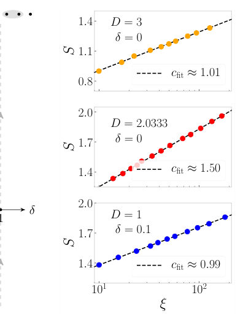
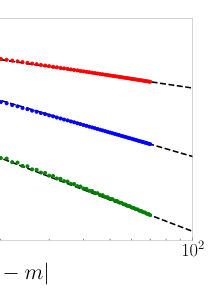
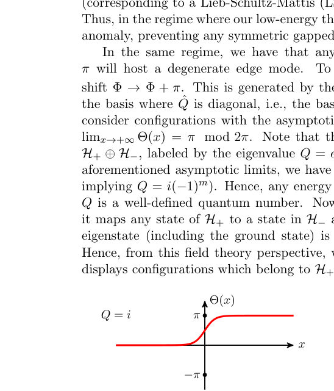
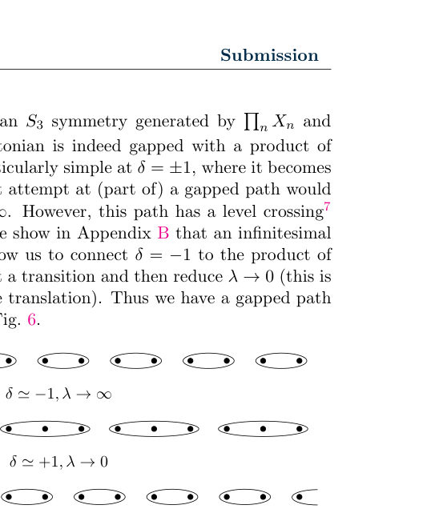
Summary. This paper introduces the concept of 'quasi-phases' to address ambiguities in classifying quantum matter near continuous critical points. It argues that distinct gapped regimes can exist even if they are connected by a critical line, provided the connection is not accessible via simple perturbations. This framework refines our understanding of phase diagrams by incorporating interface modes and stricter criteria for phase separation.
Why it may be interesting. The concept of quasi-phases provides a powerful, refined tool for classifying quantum matter that goes beyond simple topological invariants, directly impacting the understanding of phase transitions in strongly correlated systems.
Main problem. To determine if neighboring gapped regimes separated by continuous critical lines constitute distinct physical phases, moving beyond conventional topological classifications.
Main result. The authors introduce 'quasi-phases,' defined by a specific path-connectedness criterion near a critical point, leading to a richer understanding of phase structure than previously thought.
Method. The analysis involves studying the path-connectedness of gapped regimes via Renormalization Group (RG) flow arguments and developing a constructive principle by weakening the Lieb-Schultz-Mattis anomaly.
Model / system. The study uses general quantum many-body systems, exemplified by 1+1D spin chains (like the XXZ chain) exhibiting Symmetry-Protected Topological (SPT) and Representation Symmetry Protected Topological (RSPT) phenomena.
Key observables. Interface modes, entanglement spectrum degeneracy, correlation length ($\xi$), and the necessity of certain critical points (IR-necessary criticality).
Important parameters / regimes. Staggering parameter ($\delta$), anisotropy ($\Delta$), and the central charge ($c$) of the critical theory.
Assumptions / limitations. The core assumption is that the physical distinction between phases can be captured by the existence of a smooth interface connecting them in the RG flow neighborhood of the critical point.
Figures summary. Figures illustrate the spectrum of the transfer matrix for spin chains and show interpolations of observables like correlation length across different Hamiltonian regimes.
Paper structure. The paper introduces the concept of quasi-phases, applies it to specific models like spin chains to analyze SPT/RSPT transitions, and culminates in establishing a general constructive principle for defining these richer phase structures.
Within quantum many-body phase diagrams, continuous transition lines can appear and then terminate. However, it has remained unclear whether the neighboring regimes can be meaningfully described as distinct phases, akin to water and vapour, since any sharp characterization would have to go beyond the usual notion of phases of matter. We answer this in the affirmative by introducing quasi-phases: gapped regimes near a critical point that are connected in the broader phase diagram, but not by any gapped path accessible from small perturbations of the critical theory. The physical consequences include interface modes between regimes in the same phase of matter. More striking still, describing both the extended critical line and the gapped path connecting the regimes requires a bigger multicritical parent theory. In spin-chain examples with continuous terminating lines with central charge $c=1$, we find multicritical $c=3/2$ and $c=9/5$ orbifolds describing so-called 'quotient symmetry protected' and 'representation symmetry protected' topological phenomena. While one-dimensional symmetry-protected topological phases are labeled by projective representation classes, these quasi-phases can have interface modes carrying higher-dimensional linear representations. We turn this into a constructive principle through a weakening of the Lieb-Schultz-Mattis anomaly. Supporting distinct quasi-phases makes an unnecessary critical point infrared-necessary, even if it is unnecessary at the ultraviolet scale. This condition is more restrictive than simply having a codimension-one critical line, revealing richer structure within phases of matter than their conventional classification suggests.
Authors: Bowen Yang
Type: theory · Category: strongly correlated electrons · PDF: https://arxiv.org/pdf/2610.40235v1
Analysis basis: full PDF text, analyzed in chunks
Topic relevance: analog quantum simulation 2/5
Summary. This theoretical paper proves that certain three-dimensional Quantum Cellular Automata (QCA) are fundamentally complex, as they cannot be reduced to simple quantum circuits. The authors achieve this by developing a novel algebraic invariant, $I(B)$, derived from the boundary algebra, which yields a non-zero value for these specific QCA, demonstrating their non-trivial nature.
Why it may be interesting. The work connects topological order (anyon theories) and algebraic invariants (Brauer group) to the classification of quantum dynamics, which is central to understanding exotic phases of matter in strongly correlated systems.
Main problem. The paper aims to determine which three-dimensional Quantum Cellular Automata (QCA) are fundamentally distinct from those generated by finite-depth quantum circuits or simple translations.
Main result. The chiral $\mathbb{Z}_p$ QCA for any odd prime $p$ is proven not to be stably equivalent to a quantum circuit, implying the group of such QCA is not finitely generated.
Method. The proof introduces and utilizes a novel invariant, $I(B)$, defined for invertible subalgebras, which is conjectured to relate to the square of the total quantum dimension of the hosted anyon theory.
Model / system. The study focuses on three-dimensional chiral $\mathbb{Z}_p$ Clifford quantum cellular automata ($\alpha_{p,k}$) acting on lattices, which host specific anyon theories.
Key observables. The invariant $I(B) \in \mathbb{Q}^{>0}/\mathbb{Q}^2_{>0}$, which is computed to be $[p] \neq 0$ for the specific QCA.
Important parameters / regimes. The odd prime $p$ defining the $\mathbb{Z}_p$ structure, and the dimension $d=3$ of the QCA.
Assumptions / limitations. The key invariant $I(B)$ is conjectured to be the square of the total quantum dimension of the hosted anyon theory, modulo rational squares.
Paper structure. The paper builds from established results in 1D and 2D QCA novelty, introduces the boundary algebra invariant $\partial\alpha$ related to the Brauer group, develops the specific invariant $I(B)$ for invertible subalgebras, and finally applies this invariant to prove the non-triviality of the 3D QCA.
We prove that the three-dimensional chiral $\Z_p$ Clifford quantum cellular automata of Haah and of Sun--Yang--Wang--Tantivasadakarn--Chen are, for every odd prime $p$, not finite-depth quantum circuits, even after tensoring with arbitrary ancillary degrees of freedom and composing with translations. Previously such statements were known only inside the Clifford category. As a consequence, the group of three-dimensional QCA modulo stabilized circuits and translations is not finitely generated. The key ingredient is a new invariant of invertible subalgebras, which we conjecture to be the square of the total quantum dimension of the hosted anyon theory, modulo rational squares.
Authors: Benjamin A. Jasperson, Logan Dehay, Rahul Gulati, Siddhartha Srivastava, Krishna Garikipati
Type: theory · Category: statistical mechanics · PDF: https://arxiv.org/pdf/2610.40081v1
Analysis basis: full PDF text, analyzed in chunks
Topic relevance: Frenkel-Kontorova 1/5 · Keldysh / 2PI / non-Gaussian methods 1/5 · analog quantum simulation 1/5 · correlated / nonlocal dissipation 1/5 · driven-dissipative phase transition 1/5 · methods for driven-dissipative 1/5 · non-equilibrium universality 1/5 · quantum measurements 1/5 · scars & prethermalization 1/5
Summary. This work models population evacuation as a coupled process involving physical movement and information spread using an agent-based framework. Agents move under the influence of environmental potentials and local interactions, with their movement gated by their information state (Susceptible, Exposed, Informed, Reverted). The findings reveal that while structured environments help evacuation, the mechanism of information transfer is highly sensitive to spatial constraints, showing deviations from mean-field predictions.
Why it may be interesting. While focused on social dynamics, the use of continuous stochastic differential equations, potential energy landscapes, and non-equilibrium statistical mechanics principles for modeling collective behavior is highly relevant to understanding complex many-body systems.
Main problem. The paper investigates how the safe evacuation of a population depends on the coupling between the spread of information (warning) and the resulting physical movement of agents.
Main result. Potential landscapes with minima significantly improve evacuation outcomes compared to flat terrains, but physical conduits can paradoxically leave more agents never exposed by limiting necessary neighbor encounters.
Method. The study employs an agent-based framework simulating stochastic motion governed by an Itô SDE, coupled with SEIR-like information dynamics.
Model / system. The system models $N$ agents whose motion is dictated by a total potential $\psi_i$, which combines a state-dependent background potential $\psi_{BG}$ (encoding hazards/safe zones) and pairwise Lennard-Jones interactions. Agent states (S, E, I, R) determine their response to $\psi_{BG}$.
Key observables. Fraction of agents never exposed, fraction reaching safe zone minima, and the effective information transmission rate.
Important parameters / regimes. Diffusion coefficient ($D$), interaction cutoff radius ($r_c$), and the structure of the background potential ($\psi_{BG}$).
Assumptions / limitations. Only informed agents respond to the environmental potential, and mean-field closure fails to capture spatial suppression mechanisms in information transmission.
Figures summary. Figures schematically show domain initialization, information spread via overlapping spheres, and the drift/stochastic components of agent motion.
Paper structure. The paper builds the model by defining the coupled dynamics (information state transitions and stochastic motion) and then tests the model on various environmental landscapes (flat vs. potential minima vs. conduits) to quantify the impact on evacuation success.
Whether a population evacuates safely depends on two coupled processes: how a warning spreads through it, and how that information moves people. We model this coupling with an agent-based framework, in which each agent's information state--susceptible, exposed, informed or reverted--gates its motion. Only informed agents respond to a global background potential encoding hazards and safe zones, while all agents interact locally through a Lennard-Jones potential. The total potential experienced by an agent drives an Ito stochastic differential equation. Tests show that landscapes with potential minima leave far fewer agents never exposed than in a flat, uniform potential control landscape, as informed agents driven toward the minima sweep past susceptible neighbors. In our tests, conduit routes raise the fraction of agents in the safe-zone minima, but leave greater numbers of agents never exposed, when compared to an unguided evacuation. This is attributed to conduits shortening trips at the cost of informed agents having fewer encounters with susceptible neighbors who could receive their information. Independently, the effective information transmission rate estimated from these encounters falls roughly sixty-fold below its well-mixed value within the first time unit, because state transitions create spatial mechanisms of net transmission suppression that mean-field closure does not capture.
Authors: Yuki Takaha, Atsushi Ikeda
Type: theory · Category: disordered systems and neural networks · PDF: https://arxiv.org/pdf/2610.39405v1
Analysis basis: full PDF text, analyzed in chunks
Topic relevance: Frenkel-Kontorova 1/5 · Keldysh / 2PI / non-Gaussian methods 1/5 · analog quantum simulation 1/5 · driven-dissipative phase transition 1/5 · methods for driven-dissipative 1/5 · non-equilibrium universality 1/5 · quantum measurements 1/5 · scars & prethermalization 1/5
Summary. This work investigates how thermal activation events occur in structural glasses by analyzing their dependence on waiting time and preparation protocol. Using molecular simulations, the authors find a crossover in event character and demonstrate that the system's stability is governed by more than just its energy level. This highlights the crucial role of state connectivity and dynamical sampling in determining glass behavior.
Why it may be interesting. The findings regarding the failure of energy-level arguments to predict dynamics are highly relevant to understanding complex energy landscapes in disordered systems, which share conceptual links with many-body dynamics in amorphous materials.
Main problem. The study investigates the waiting time dependence and protocol dependence of thermally activated events in structural glasses.
Main result. Activation properties are not solely determined by energy levels, as the parent-temperature-controlled glasses were found to be more unstable and maintain an avalanche-like nature compared to waiting-time-controlled ones.
Method. The research employs molecular simulations using Langevin dynamics, potential energy landscape analysis, and isoconfigurational ensemble analysis.
Model / system. The system models structural glasses using the modified Kob-Andersen model in two dimensions (a binary mixture). Dynamics are simulated using underdamped Langevin dynamics.
Key observables. Waiting time dependence of potential energy, nature of activation events (avalanche-like vs. local), effective number of paths, and reversibility.
Important parameters / regimes. Waiting time ($t_w$), parent temperature, and the inherent structure energy level ($e_{IS}$).
Assumptions / limitations. The analysis relies on comparing different control protocols (waiting time vs. parent temperature) to probe the underlying energy landscape structure.
Figures summary. Figure 1 shows the logarithmic or weak power-law decrease of $e_{IS}$ with waiting time, and the analysis tracks the crossover in event nature.
Paper structure. The paper systematically analyzes the waiting time dependence, observing a crossover from avalanche-like to local events, and then contrasts the results obtained from waiting-time-controlled versus parent-temperature-controlled glasses to highlight the role of state connectivity.
In this study, we investigate the waiting time dependence and the protocol dependence of thermally activated events in structural glasses using molecular simulations and potential energy landscape analysis. We find a qualitative crossover in the nature of activation events; from avalanche-like events to local events. We also use the isoconfigurational ensemble analysis and reveal that the events become less diverse and more reversible. We discuss these crossovers from the perspective of the stability and the potential energy landscape of glasses. To investigate the protocol dependence, we compare the two types of glasses whose stability is controlled by waiting time and parent temperature, respectively. Surprisingly, at the same inherent structure energy level, the parent-temperature-controlled glasses are more unstable and maintain their avalanche-like nature. These results demonstrate that the activation properties of structural glasses are not determined solely by their energy levels, highlighting the essential role of state connectivity and the dynamical sampling in the complex energy landscape.
Authors: Matt Wilson, James Hefford, Timothée Hoffreumon
Type: theory · Category: other · PDF: https://arxiv.org/pdf/2610.40448v1
Analysis basis: full PDF text, analyzed in chunks
Topic relevance: Keldysh / 2PI / non-Gaussian methods 1/5 · analog quantum simulation 1/5 · correlated / nonlocal dissipation 1/5 · driven-dissipative phase transition 1/5 · methods for driven-dissipative 1/5 · quantum measurements 1/5
Summary. This paper develops a mathematical framework to characterize causal structures in generalized physical theories using process matrices. It establishes rigorous conditions, such as the Busch-Gleason axiom, under which abstract process functionals can be represented by process matrices, linking these concepts to established supermap formalisms. This provides a powerful tool for understanding the fundamental nature of causality in physics.
Why it may be interesting. This work provides a deep mathematical framework for understanding the fundamental limits of causality and correlation structures beyond standard quantum mechanics, which is crucial for theoretical physics exploring non-classical correlations.
Main problem. The paper aims to extend the process-matrix framework to define indefinite causal orders across a broad class of generalized physical theories.
Main result. It provides a clean characterization of theories where abstract spacetime contexts admit a process-matrix representation, establishing precise conditions under which supermap and process-matrix perspectives coincide.
Method. The authors use a compositional perspective, developing process functionals defined via naturality over classical probes, and comparing these to supermap formulations.
Model / system. The framework applies to generalized theories, modeled as convex enriched symmetric monoidal categories, encompassing classical, quantum, and Boxworld-like correlation structures.
Key observables. Process functionals, supermaps, and process matrices are the key observables used to characterize causal structure.
Important parameters / regimes. The analysis hinges on axiomatic conditions such as the Busch-Gleason axiom and Tomographic Closure.
Assumptions / limitations. The derivation relies heavily on the assumption of Channel-state duality and the existence of a well-behaved classical interface for the generalized theories.
Figures summary. Figures illustrate the comparison between supermap and process matrix perspectives on higher-order operations, and show the application of process functionals in classical and quantum settings.
Paper structure. The paper builds by first defining process functionals, establishing their equivalence to strong natural transformations (Theorem 1). It then uses axioms like the Busch-Gleason axiom to prove the existence of process-matrix representations, culminating in theorems that equate process matrices with supermaps under specific conditions.
We extend the process-matrix framework for defining indefinite causal orders to a broad class of generalised physical theories. We give a simple re-axiomatisation of spacetime contexts in terms of naturality over classical probes, which precisely captures non-contextual assignment together with compatibility with convexity and coarse-graining within local laboratories. Using this compositional perspective, we give a clean characterisation of theories in which abstract spacetime contexts admit a process-matrix representation, and we pin down the precise conditions (satisfied by classical theory, quantum theory, and a Boxworld-like theory) under which the supermap and process-matrix perspectives on higher-order processes coincide.
Authors: Frieder Lindel, Jonathan B. Curtis, Jérôme Faist, Eugene Demler
Type: theory · Category: statistical mechanics · PDF: https://arxiv.org/pdf/2610.40222v1
Analysis basis: full PDF text, analyzed in chunks
Topic relevance: Keldysh / 2PI / non-Gaussian methods 1/5 · Tavis-Cummings & cavity-many-emitter 1/5 · analog quantum simulation 1/5 · correlated / nonlocal dissipation 1/5 · driven-dissipative phase transition 1/5 · methods for driven-dissipative 1/5
Summary. This theoretical work investigates how coupling a disordered superconductor to a THz resonator affects its critical temperature. By developing an equilibrium theory that accounts for superconducting phase fluctuations, the authors show that the coupling enhances $T_c$ by a measurable amount. This highlights superconductors with soft phase fluctuations as promising platforms for external electromagnetic control.
Why it may be interesting. The work bridges superconducting phase transitions (BKT physics) with cavity QED/THz control, providing a mechanism for external electromagnetic fields to tune fundamental material properties in a non-trivial, fluctuation-dependent way.
Main problem. The paper develops an equilibrium theory to understand how coupling a mesoscopic, disordered superconductor to a terahertz resonator modifies its superconducting transition temperature ($T_c$).
Main result. The coupling enhances the superconducting transition temperature ($T_c$) by about $1\%$ for representative samples, an effect strongly dependent on phase fluctuations near the BKT transition.
Method. The analysis uses an equilibrium free energy approach, minimizing the total action over the superfluid density, and incorporates renormalization group techniques for BKT physics.
Model / system. The system is a disordered two-dimensional superconductor coupled to a subwavelength terahertz resonator, modeled using a lumped-element circuit and a dirty BCS superconductor framework.
Key observables. Critical temperature shift ($\delta T_c$), superfluid density ($n_s(T)$), and the total sample impedance ($Z$).
Important parameters / regimes. Sample size ($1\mu ext{m} imes 1\mu ext{m}$), film thickness ($8 ext{nm}$), resonator frequency ($\Omega_{LC}$), and the ratio of sample size to coherence length ($L/\xi_{GL}$).
Assumptions / limitations. The analysis assumes the sample is a dirty BCS superconductor and requires including the resistive normal-state background for accurate results.
Figures summary. Figures illustrate the setup, the mechanism of impedance change (superfluid shunting), the temperature dependence of superfluid density, and the calculated relative shift in $T_c$ under different theoretical treatments.
Paper structure. The paper builds the theory by defining the coupled action, deriving the sample impedance using the two-fluid model, minimizing the action to find the temperature dependence of superfluid density, and finally calculating the resulting enhancement of $T_c$ in the presence of phase fluctuations.
Coupling quantum materials to electromagnetic cavities or resonators without external driving has gained prominence as a new control mechanism. Here we develop an equilibrium theory of a mesoscopic, disordered two-dimensional superconductor coupled to a subwavelength terahertz resonator, focusing on the interplay between superconducting phase fluctuations in the sample and electromagnetic fluctuations of the resonator. Modeling the resonator as a lumped-element circuit, we show that the coupling enhances, rather than suppresses, the superconducting transition temperature $T_c$. When the sample is smaller than the Pearl length, phase fluctuations near the Berezinskii--Kosterlitz--Thouless (BKT) transition strongly amplify this enhancement. Crucially, the resistive quasiparticle response of the sample must be included in the analysis: at low frequencies the superfluid shunts the normal-fluid channel, reducing the total sample impedance. For representative parameters, a $1 \,μ\mathrm{m} \times 1 \,μ\mathrm{m}$, $8 $nm-thick disordered film, we find a relative $T_c$ enhancement of about $1\%$, an order of magnitude larger than the $0.1\% $ obtained when phase fluctuations are neglected. These results identify superconductors with soft phase fluctuations as promising platforms for equilibrium control with terahertz resonators.
Authors: Sara Iranbakhsh, David A. Sivak
Type: theory · Category: statistical mechanics · PDF: https://arxiv.org/pdf/2610.39121v1
Analysis basis: full PDF text, analyzed in chunks
Topic relevance: Frenkel-Kontorova 1/5 · Keldysh / 2PI / non-Gaussian methods 1/5 · correlated / nonlocal dissipation 1/5 · driven-dissipative phase transition 1/5 · methods for driven-dissipative 1/5 · non-equilibrium universality 1/5
Summary. This work analyzes coupled rotary motors, modeling them as gear-like systems whose energy transduction efficiency depends critically on symmetry matching. The authors find that while strong coupling favors symmetry matching for maximum power, weakening this coupling can destabilize the system, causing the optimal ratio to shift dramatically. This offers a general design principle for understanding how molecular motors operate.
Why it may be interesting. The study provides a general design principle for coupled molecular motors, showing how symmetry constraints dictate energy transduction efficiency, which is relevant to non-equilibrium statistical mechanics in biological systems.
Main problem. The paper investigates how symmetry matching in gear-like coupled rotary motors controls the efficiency of energy transduction.
Main result. The optimal gear ratio for maximum power under strong coupling approaches symmetry match, but weakening the coupling can invert this effect, turning the power maximum into a local minimum.
Method. The study uses numerical solutions of the Fokker-Planck dynamics and analytical derivations for the barrierless limit to model the coupled rotors.
Model / system. The system models two coupled rotary molecular motors (like the C-ring–MS-ring in bacterial flagella) diffusing on periodic energy landscapes defined by a coupled potential. The dynamics are governed by the Fokker-Planck equation.
Key observables. Output power ($P_1$) as a function of the upstream rotor's subunit number ($n_o$), and the coupling strength ($E_c$).
Important parameters / regimes. Coupling strength ($E_c$), driving forces ($\mu_o, \mu_1$), and the ratio of subunit numbers ($n_o/n_1$).
Assumptions / limitations. The analysis compares results from the full Fokker-Planck dynamics (with finite barriers) against simplified barrierless models and Langevin descriptions.
Figures summary. Figures illustrate schematics of the BFM structure and gear-like coupling, showing output power vs. subunit number for various coupling strengths and driving schemes.
Paper structure. The paper progresses by defining the physical model and Hamiltonian, analyzing the dynamics in different coupling regimes (tight, intermediate, weak), deriving analytical results for the barrierless limit, and finally comparing these predictions with full numerical simulations.
Rotary molecular motors commonly couple components with different rotational symmetries, but how this gearing controls energy transduction remains unclear. Here we show that symmetry can produce a fundamental tradeoff in coupled stochastic barrierless rotary motors: the gear ratio that maximizes output power under tight coupling is also the ratio that requires the strongest coupling to remain locked. Consequently, weakening the coupling can invert the effect of gearing, transforming a power maximum into a local minimum. At strong driving, both the power-optimal and most slip-susceptible ratios approach symmetry match. Numerical solutions of the Fokker-Planck dynamics for rotors with finite energy barriers reproduce these predictions and reveal how the behavior changes when driving strength is fixed per rotation or per subunit. Motivated by the bacterial flagellar motor, these results identify coupling strength as a key determinant of whether matched rotational symmetries enhance or suppress energy transduction, providing a general design principle for coupled molecular motors.
Authors: Tom Michoel
Type: theory · Category: statistical mechanics · PDF: https://arxiv.org/pdf/2610.39624v1
Analysis basis: full PDF text, analyzed in chunks
Topic relevance: Keldysh / 2PI / non-Gaussian methods 1/5 · correlated / nonlocal dissipation 1/5 · driven-dissipative phase transition 1/5 · methods for driven-dissipative 1/5 · non-equilibrium universality 1/5
Summary. This work establishes a Fluctuation-Dissipation Relation (FDR) for branching particle systems, linking the measurable fluctuations in entire clonal populations to the dissipative properties of the single-particle dynamics. It provides theoretical predictions for how these fluctuations behave—including oscillations in non-equilibrium states—offering a novel method to measure fluxes in systems where single-cell tracking is impossible.
Why it may be interesting. The connection between macroscopic, collective fluctuations (clonal memory) and the underlying single-particle dynamics via a generalized FDR is a powerful tool for characterizing non-equilibrium steady states in complex biological or physical systems.
Main problem. The paper derives a Fluctuation-Dissipation Relation (FDR) for branching particle systems to explain how fluctuations in clonal populations encode both population growth and the dissipative structure of single-particle dynamics.
Main result. The FDR relates macroscopic clonal fluctuations to the single-particle dissipation function, predicting oscillatory fluctuations in non-equilibrium stationary states, which offers a way to measure non-equilibrium fluxes without single-cell tracking.
Method. The analysis involves deriving moment equations and applying the law of total variance to relate the variance of the total observable to the single-particle autocorrelation function and population growth rates.
Model / system. The model is a branching particle system where single-particle states evolve according to a stationary Markov process, often exemplified by Ornstein-Uhlenbeck Processes (OUPs).
Key observables. Intrinsic variance of the observable ($ ext{Var}{ ext{int}}(S_t)$), clonal covariance ($ ext{Cov}(S_t, S'}t)$), and the two-time autocorrelation function ($\kappa(t)$).
Important parameters / regimes. Population growth rate ($r$), spectral gap ($\lambda$), and the ratio of relaxation rates to growth rates (e.g., $2\alpha$ vs $r$).
Assumptions / limitations. The single-particle dynamics are assumed to follow a stationary Markov process, and the analysis often relies on the assumption of exponential lifetime distributions.
Figures summary. Figures compare theoretical and empirical estimates of clonal fluctuations across different regimes (OUPs), showing evidence of exponential divergence, linear growth, and oscillatory behavior.
Paper structure. The paper develops the FDR by analyzing the variance of the total observable, decomposing it using the law of total variance, and applying this framework to specific models like OUPs to derive predictions for different non-equilibrium regimes.
A fluctuation-dissipation relation (FDR) for branching particle systems is derived that reveals how fluctuations in clonal populations originating from a single ancestor encode both population growth and the dissipative structure of the single-particle dynamics. For particles whose internal states evolve according to a stationary Markov process, the FDR holds in both equilibrium and nonequilibrium stationary states. It yields an upper bound on the spectral gap that is constrained by the magnitude of clonal fluctuations and implies that clonal dynamics is asymptotically dominated by the slowest modes of the single-particle dynamics. This provides a theoretical explanation for the persistence of clonal memory and for experimentally observed clonal cofluctuations between variables with zero covariance in the single-particle stationary state. In nonequilibrium stationary states, the FDR predicts oscillatory clonal fluctuations, suggesting a route to measuring nonequilibrium fluxes in proliferating cell populations without single-cell tracking.
Authors: Wanli Xing, Timothy C. Ralph
Type: theory · Category: other · PDF: https://arxiv.org/pdf/2610.39387v1
Analysis basis: full PDF text, analyzed in chunks
Topic relevance: Keldysh / 2PI / non-Gaussian methods 1/5 · driven-dissipative phase transition 1/5 · methods for driven-dissipative 1/5
Summary. This paper provides a comprehensive, fully quantized theoretical treatment of parametric amplification and three-wave mixing. It derives exact analytic expressions for quantum correlations, successfully handling the complex physics of pump depletion without resorting to approximations. The results are vital for advancing quantum optical technologies by accurately predicting noise characteristics.
Why it may be interesting. This work provides rigorous, non-perturbative analytical tools to calculate quantum noise and correlations in nonlinear optical processes, which is crucial for understanding quantum light sources and quantum information processing.
Main problem. The paper derives analytic expressions for observable dynamics under the fully quantized trilinear Hamiltonian governing quantum three-wave mixing and parametric amplification, especially when pump depletion occurs.
Main result. The analytic framework successfully calculates first-, second-, and third-order correlations without relying on parametric approximations, resolving complex quantum noise features like finite minimum squeezing.
Method. The authors reorganize the Heisenberg expansion using Borel summation and define normalized moments to derive directly evaluable expressions for correlation functions.
Model / system. The system models quantum three-wave mixing and parametric amplification, governed by a quantized trilinear Hamiltonian. The analysis tracks the evolution of quantum operators under pump depletion.
Key observables. First-, second-, and third-order correlations; Pump quadrature variances ($V_{X_c}, V_{Y_c}$); Signal-idler squeezing variance ($ ext{VEPR}$).
Important parameters / regimes. Pump depletion level ($\chi$), input squeezing parameters ($r, heta$), and the coupling constant ($g$).
Assumptions / limitations. The method is designed to overcome limitations of previous work that used approximations or resulted in non-compact solutions; the analysis is restricted in later passages.
Figures summary. Figure 1 compares numerical evolution with corrected analytic results for pump population; Figure 2 shows $ ext{VEPR}$ vs. $\chi$ comparing different approximations; Figure 3 demonstrates how input squeezing controls third-order correlations.
Paper structure. The paper systematically develops the analytic framework by calculating moments, deriving expressions for correlations, and then presenting detailed mathematical machinery via index maps and polynomial fits to determine return profiles.
We derive analytic expressions for observable dynamics under the fully quantized trilinear Hamiltonian, governing quantum three-wave mixing and parametric amplification. Starting from a coherent pump and vacuum signal and idler, the calculation reorganizes the Heisenberg expansion into resummed depletion and return profiles, yielding directly evaluable expressions for all 1st-, 2nd- and 3rd-order correlations. The construction uses no parametric approximation or fitted parameters. Representative numerical benchmarks show errors of order $10^{-12}$ throughout the entire pump depletion, and below $10^{-3}$ across dozens of depletion-and-back-conversion cycles, up to the first total collapse of the oscillation. The first-depletion treatment additionally provides 4th-order correlations, accommodates bright squeezed-pump inputs and reveals phenomena important to future optical quantum technologies. The framework can be extended to higher moments.
← Index · ← Previous · Next →